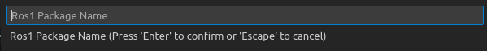

Workspace Level Readme:
Intent of the repository :
- To be a container and workspace for various packages that will be created for ENPM661 ENPM673 semester projects: for the terpbot project.
Initial Setup for Development on PC/Laptop:
- Install vs-code editor on your ubuntu 20.04 host OS : https://linuxize.com/post/how-to-install-visual-studio-code-on-ubuntu-20-04/
- Install docker on your ubuntu 20.04 host OS : https://docs.docker.com/engine/install/ubuntu/
- Please remember to follow all the steps in docker installation, and verifying it's successful installation @ https://docs.docker.com/engine/install/ubuntu/#next-steps > https://docs.docker.com/engine/install/linux-postinstall/#manage-docker-as-a-non-root-user (Step 1 2 3 4)
- Install following extensions on your VSCode:
- Clone this repository using: >
git clone --recurse-submodules https://github.com/vedran97/plan-percep-ws.git - From the current working directory, cd to plan-percep-ws repo which u just cloned
- Open a terminal in plan-percep-ws and type >
code . - A VSCode popup should arise which says "Open folder in Container" where you choose Yes OR press F1,search for "Open Folder in Container" and execute the command
- Now wait for the build process to finish, once it's completed, you have a fully functional ROS1 workspace with example packages
- When the container is built for the first time, a error will popup saying "Failed to enable ROS Extension" , just choose the reload window option
- Set up ROS dependencies using the following section
VS Code tasks:
0. How to use this? Ans: Open this directory as a container(or not) and press "Ctrl+Shift+B" to get a drop down list of available tasks.
Like this:

Tasks
- "ROS:Build a Package" task -> This task lets you build a selected few, or all packages. CMake parrallelism limits have been added to prevent crashing during builds.
- Choose a build config:
 Build-Config
Build-Config - Choose a package name:
Package-Name
- Choose a build config:
choosing no package name, will build all packages in this directory
- "ROS:Install ROS dependencies" task -> This task lets you install ros-deps which are mentioned in any package's package.xml file, which is included in this workspace.
- "ROS: Clean" task -> This task cleans the workspace off all build artifacts
Setting up ROS-Dependencies :
- Run the VSCode task "ROS:Install ROS dependencies"
Setup Raspberry PI for development and code build:
- Setup github ssh on RPI.
- Clone this repository using: >
git clone --recurse-submodules https://github.com/vedran97/plan-percep-ws.git - >
cd plan-percep-ws - >
sudo bash ./robot-scripts/install-ros.bash - >
sudo bash ./robot-scripts/dep.bash